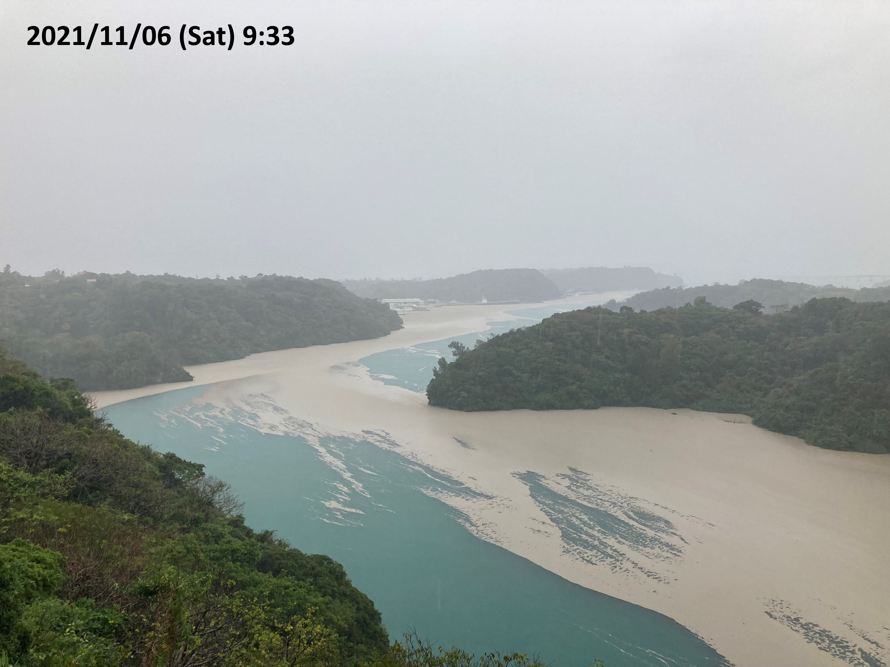

・沖縄県 福徳岡ノ場火山漂着軽石(2021/11/6)
26°40'02.71" N 127°59'40.53" E. ワルミ大橋から北側を撮影(左：本部半島、右：屋我地島)
海面表層を覆う軽石は一日の間でも潮の干満に伴い移動している。
- 
・新潟県佐渡島北岸 舞鶴帯の変斑糲岩
38°18'07.72" N 138°27'05.89" E


・愛媛県新居浜市 第6回国際エクロジャイト会議記念碑


26°40'02.71" N 127°59'40.53" E. ワルミ大橋から北側を撮影(左：本部半島、右：屋我地島)
海面表層を覆う軽石は一日の間でも潮の干満に伴い移動している。
38°18'07.72" N 138°27'05.89" E